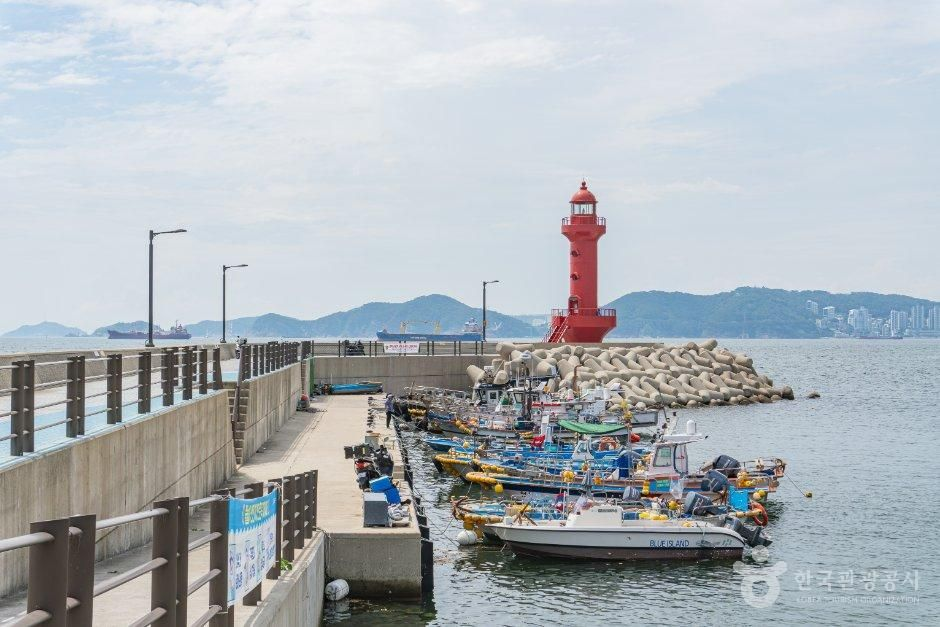
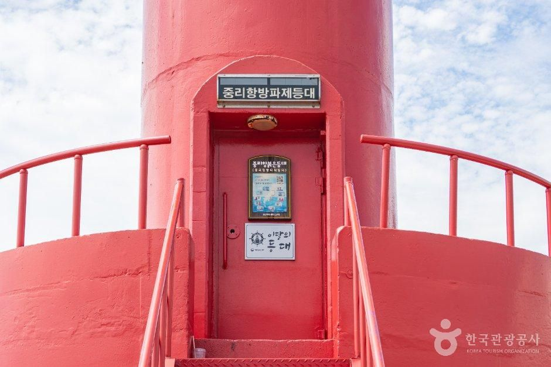
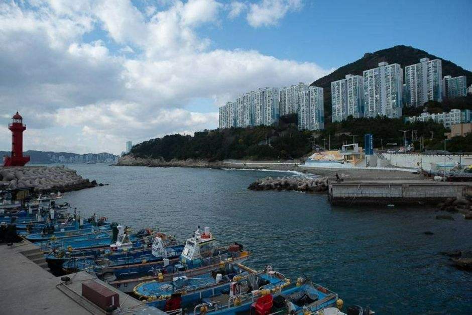
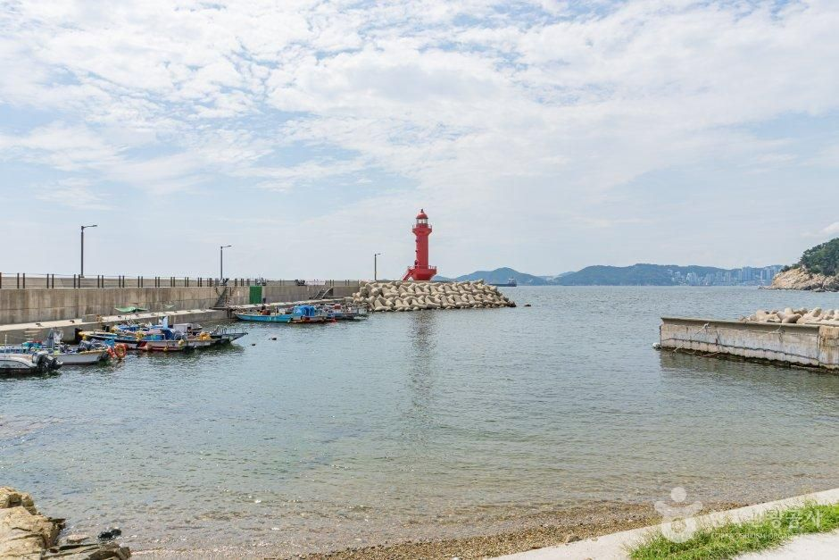
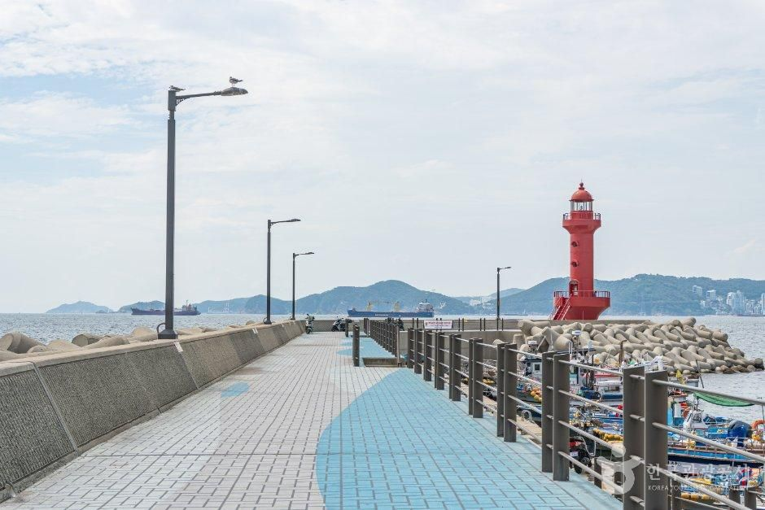

Jungni Port Lighthouse Guide: Overview
This Jungni Port lighthouse guide covers a small red lighthouse at the end of a fishing-harbour breakwater on Yeongdo island, Busan. Managed by the Busan Regional Office of Oceans and Fisheries, it was first lit in August 2018 and was named Korea's "Lighthouse of the Month" in March 2022. It is one of the best quiet Busan sunset spots.
The lighthouse itself takes ten minutes to see. What makes the trip is the cluster around it: a haenyeo village where Busan's women divers sell the day's catch, the Yeongdo Haenyeo Culture Exhibition Hall, the Jungni Sunset Observatory and the start of the Jeolyeong Coastal Trail. We checked every detail against Korea Tourism Organization (KTO) data, Yeongdo-gu Office and Busan bus information.
"Walk out to the red lighthouse at golden hour, then eat fresh sea squirt and abalone from the women who dived for it."

The Red Lighthouse and Breakwater
The lighthouse is a bright red cylinder at the tip of the Jungni Port breakwater. A wide paved walkway with railings leads out past moored fishing boats, so the walk is easy for most visitors, including families. You will share it with anglers: the breakwater is a popular fishing spot, so watch for lines and keep children close to the railing.
From the end you look back over the small harbour, Yeongdo's apartment-covered hills and, on clear days, the islands and coast of Busan's western side. Bring a jacket outside summer, because the wind on the breakwater is much stronger than in the village.

Jungni Sunset Observatory
Just above the gravel beach, the Jungni Sunset Observatory was built so visitors can watch the sunset safely from the coastal road. It has a square frame-shaped photo zone and a cantilevered viewing deck that juts out over the shore. There are no other facilities, so use the toilets at the nearby public car park.
Yeongdo-gu describes Jungni as one of Busan's best sunset spots, with calmer water than most beaches. The observatory also marks one end of the Jeolyeong Coastal Trail, part of Busan's Galmaetgil walking network, which follows the cliffs toward Huinnyeoul Culture Village; expect long stairs.

Haenyeo Village and Exhibition Hall
At the entrance to the breakwater is the Jungni haenyeo village, set up by women divers about 30 years ago. They serve seafood caught off Yeongdo the same day, such as sea squirt, sea cucumber, abalone and octopus, often with soju at simple tables by the sea. Prices are by the plate and can change with the catch.
Next door, the two-storey Yeongdo Haenyeo Culture Exhibition Hall (2-36 Jungninam-ro) explains the history of the haenyeo, most of whom came from Jeju; KTO data dates the first Jeju divers on Yeongdo to 1887. Four sections cover haenyeo heritage and their routes, diving suits and tools, local seafood, and their work and lives, with videos. Haenyeo culture became a National Intangible Cultural Heritage of Korea in May 2017. The ground floor has a seafood counter run by the divers.


Visitor Information
| Item | Details |
|---|---|
| Address | 2-15 Jungninam-ro, Dongsam-dong, Yeongdo-gu, Busan (부산광역시 영도구 중리남로 2-15) |
| Hours | Open 24 hours (lighthouse and sunset observatory) |
| Closed | Never (open all year) |
| Admission | Free |
| Parking | None at the lighthouse or observatory; paid car parks nearby |
| Managed by | Busan Regional Office of Oceans and Fisheries, +82-51-609-6812 |
| Tourist info | Yeongdo-gu tourist information, +82-51-419-4048 |
| First lit | August 2018; Lighthouse of the Month, March 2022 |
| Nearby | Haenyeo village, Yeongdo Haenyeo Culture Exhibition Hall, Jungni Sunset Observatory, Jeolyeong Coastal Trail, Huinnyeoul Culture Village, Taejongdae |
Sources: Korea Tourism Organization data for Jungni Port Breakwater Lighthouse, Jungni Sunset Observatory and Yeongdo Haenyeo Culture Exhibition Hall; Yeongdo-gu Office audio guide and city bus route list; Busan City Tour Green Line stop information. Photos © Korea Tourism Organization (KOGL Type 1, attribution), unmodified. No AI-generated images.
Getting There
Buses 7 and 70 end at the Yeongdo Jungni stop, a short walk from the haenyeo village and the breakwater. From Nampo Station (Line 1), walk across Yeongdo Bridge and take bus 7. From Busan Station, buses 82, 85 and 508 reach Huinnyeoul Culture Village, where you can change to bus 7 or 70 for about 10 more minutes along the coast.
The Busan City Tour Green Line also stops at Yeongdo Haenyeo Village (Sunset Observatory), which is handy if you are already doing a hop-on, hop-off day. A taxi from Nampo-dong takes about 15–20 minutes, depending on traffic.
Tips for Visiting
- Time it for sunset: arrive about an hour early; late-November sunset in Busan is around 5:15 pm.
- Pair it with Yeongdo: combine with Huinnyeoul Culture Village and Taejongdae for a half-day on the island.
- Bring cash: small seafood stalls are simpler with cash, and prices are set by the plate.
- Mind the anglers: stay clear of casting lines on the breakwater and do not climb the wave-break blocks.
- Check the weather: strong winds or high waves can close the breakwater for safety.
How It Compares with Other Busan Sunset Spots
| Jungni Port Lighthouse | Dadaepo Beach | Gwangalli Beach | |
|---|---|---|---|
| Crowds | Quiet, local | Busy at weekends | Very busy |
| Main view | Red lighthouse and fishing harbour | Wide sandy beach | Gwangan Bridge, city lights |
| Food | Haenyeo seafood stalls | Restaurants and cafés | Lots of bars and cafés |
| Access | Bus 7 / 70, about 30 min from Nampo | Metro Line 1 | Metro Line 2 |
| Best for | Photographers, culture lovers | Families, long walks | Nightlife and drone shows |
Who It Suits
- Great for: Travellers who want a quieter sunset than Haeundae or Gwangalli.
- Great for: Anyone curious about Korea's haenyeo women divers and fresh local seafood.
- Great for: Photographers who like red lighthouses, fishing boats and golden-hour light.
- Less ideal: Visitors with little time; it takes a bus ride from central Busan and works best with the rest of Yeongdo.
Plan Your Busan Trip
Jungni Port Lighthouse FAQ
Where is the Jungni Port breakwater lighthouse?
It stands at the end of the Jungni Port breakwater, 2-15 Jungninam-ro, Dongsam-dong, Yeongdo-gu, Busan, on the south-east side of Yeongdo island. The Yeongdo Haenyeo Culture Exhibition Hall and the Jungni Sunset Observatory are a few minutes' walk away.
How do I get there by public transport?
Take city bus 7 or 70 to the Yeongdo Jungni terminus; both run along Yeongdo's coast past Huinnyeoul Culture Village. From Nampo Station (Line 1), cross Yeongdo Bridge and catch bus 7 directly. The stop is about 2–5 minutes on foot from the haenyeo village, observatory and breakwater.
Is there an entrance fee or opening time?
No. Korea Tourism Organization data lists the lighthouse and the sunset observatory as open at all times, every day of the year, with no admission fee. The exhibition hall and seafood stalls keep their own hours, so check before you go.
When is the best time to visit?
Late afternoon. Jungni's seafront is known for its golden sunsets; arrive an hour before sunset (around 5:15 pm in late November) to walk the breakwater in daylight, then watch from the observatory as the red lighthouse lights up.
Can I park at the lighthouse?
No. KTO lists parking as not available at the lighthouse or the observatory. There are paid public and private car parks nearby, but the bus is easier at weekends.